Evaluation Tests
Our team conducted a range of Evaluation tests for both Hardware and Webots versions of PAUL. On this page we will provide a summary of all the tests we have conducted during the course of the semester.
Hardware Tests
Evaluation test runs on the hardware prototype were conducted with the help of technicians, to start each test we remotely connected to the Raspberry Pi and executed the controller program.- Motor Tests - One of the first evaluation tests conducted to make sure if PAUL was capable of climbing and descending the pole and capable
of stopping without slipping back down.
Conclusion - PAUL was only able to climb the pole with motor power of more than 60% as its wheels appeared to not have enough power to lift PAUL up the pole. At 100%, the motors appeared to cause the drive shafts of the motors to become detached which compromised the integrity of PAUL and caused it to fall back down the pole. PAUL was able to climb the pole at 70% without slipping back down the pole
NOTE - The motors used a percentage value to control the speed of the motors, within the range [-100,100], positive represents climbing and negative represents descending.
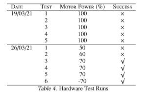
- Hardware Sensor Tests - Before attaching the sensors on to the Hardware Prototype casing, we tested if they were functioning properly. To check the IR sensors we took readings from the IR sensors when close (4cm) and far away (21.5cm) from a target. The values 4cm and 21cm were chosen as these were the minimum and maximum ranges of our sensors, so produced the highest and lowest outputs respectively. We tested the bumper sensors by having the technicians manually trigger each bumper sensor to check that they were working as expected.
Success criteria: Check that the sensor outputs we received from the Phidget board were within the expected range (as specified by the technicians).
We checked that when the bumper sensors were triggered they were equal to 1 and when not triggered they were equal to 0. We checked that the IR sensors close to the target were above the threshold and sensors beyond the maximum range from the target were below the threshold.
Conclusion - The IR sensors gave a high reading when they were close to the target and a low reading when they were far away as expected. Bumper Sensors were triggered when activated by the technicians as expected.
NOTE - BS = Bumper Sensors
NOTE - On test 4 the tape holding down one of the bumper sensors during the test fell off and caused it to not be triggered. In test 5 we repeated test 4 with the tape attached properly.
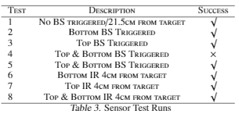
- UV-Cleaning System Test - We conducted test runs on our Hardware prototype with the UV cleaning module installed.
To start each test we remotely connected to the Raspberry Pi and executed the controller program.
A technician then recorded the test run and sent the video back to us. Our success criteria for each test was to check the video and see if PAUL could climb the pole starting at the bottom without slipping back down and stop before it reached the top.
We also checked that the integrity of the UV casing was maintained throughout the test.
Conclusion - At 80,90,100% we faced the same problem with our motors causing the drive shafts of the motors to become detached which compromised the integrity of PAUL and caused it to fall back down the pole.
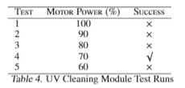
- LED Light Test - The purpose of this test was to ensure that the LED light functioned properly. To activate the LED light, we ran a python script with root privileges.
Success Criteria - Test was considered successful if the light was turned on/off upon running the scipt. An image of the LED was provided by the technicians for checking the colour emitted by the LED light.
Conclusion - Tests 1 and 2 were unsuccessful as the Python script failed to activate due to conflicts with the motor library. Tests 3 and 4 were successful in activating the LED using the library but the colour was not similar enough to look like UV hence the tests were considered unsuccessful on that basis. Tests 5 and 6 were successful as we were able to activate the LED and have the colour look similar enough to UV light.
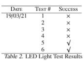
- UV-Cleaning Module Test - These tests were conducted at 70% motor power. The objective was to check that PAUL could climb the pole successfully and perform its UV cleaning function as planned.
Success Criteria - Check the video provided by the technicians to see if PAUL successfully climbed the pole starting at the bottom without slipping back down and stop before it reached the top. The integrity of the UV-casing was also taken into account.
Conclusion - The last successful test was conducted on 16/03/2021 which was conducted before installing components into the consumer box. After installing the components into the consumer box, we faced a range of issues.
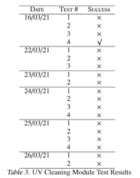
- ISSUE - 16/03/2021 - In tests 1 and 2, the pins on the Python LED library didn't match the pins on the Raspberry Pi.
Solution - Edited pins in the Library to match our Raspberry Pi setup. - ISSUE - 22/03/2021 - Technicians reported that the motor appeared to be stalling.
Solution - Removed PAUL from the pole and started the motors again. The technicians were then able to identify the stalling motor and replace it with a new one. - ISSUE - 23/03/2021 - The short gap between UV casing and the pole caused more friction.
Solution - Shortened legs on UV casing to reduce friction. - ISSUE - 24/03/2021 - Short gap between UV-casing and pole continued to cause more friction.
Solution - New UV casing with more space between pole to reduce friction. - ISSUE - 25/03/2021 - Motor connections kept coming loose when PAUL started up.
Solution - The technicians identified the weak points on the connection and improved the drive shaft design. - ISSUE - 26/03/2021 - Wire arm put a lot of pressure on one side of PAUL causing an imbalance.
Solution - Attempted to balance by using elastic to hold arm to reduce pressure on one side.
- ISSUE - 16/03/2021 - In tests 1 and 2, the pins on the Python LED library didn't match the pins on the Raspberry Pi.
Webots Tests
Evaluation tests were conducted on Webots where both the robot and the environment were simulated.- Velocity Testing - We started this test with a 2m high pole, having a radius of 0.03m. PAUL was rigorously tested 5 times for each of the 5 values of velocity and passed each and every one of the 25 tests.
NOTE - Each value under the column "Time Taken" is the average of the 5 tests for each value of velocity, it is the time taken to climb the pole from the bottom and descend from the top to the same spot from where it started.
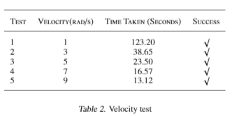
We were satisfied with these tests since we intended to use UVC with the robot, therefore, there was no need to make it move fast.
- Height Testing - Evaluation tests were also conducted ensuring viability on poles of different lengths. All of these were conducted with a velocity of 5 (rad/s).
Each test was run 5 times and the results did not differ between tests on the same length.
Success Criteria - Reaching the top of the pole after starting from the bottom. Conclusion - It was noticed that around 10m, the robot would slip and fall down the pole.
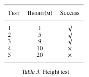
- Distance Sensor Tests
- Tests conducted without noise - The following settings were used as default on webots - Pole Height - 2m, Up/Down wheel speed - 0.3 rad/s, Distance sensor thresholds of 1000mm.
The UV light was engaged by default.
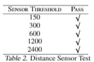
Conclusion - We passed all the tests upon adding a patch to the controller.
In addition to this, we conducted extended tests -
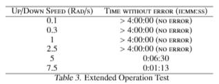
The results showed that PAUL ran remarkably well at and beyond our expected operation speeds. We again implemented a small patch allowing for the simulation to halt for a set period between cleaning cycles to minimise downtime. Taken holistically, these tests amongst others on speed, breaking, friction and height show that PAUL consistently operates well on parameters near what we estimated to be normal operation.
- Tests conducted with noise - We set the sensor to report in millimetres. Noise was added allowing the value reported to be within a percentage
range of the actual value. In order to simulate a real-world environment, where more noise may be introduced the further from the surface the sensor is,
we set the noise at 500mm to be double that of the values under 100mm, values between 100mm and 500mm were scaled linearly and the sensor did not report
values above 500. 100mm was an estimate of how high we expected may be necessary to accommodate for clearance of PAUL and curvature of surfaces near the
top of the pole.
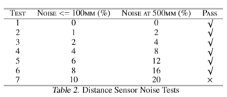
Success Criteria - Being able to perform 5 tours of the pole successfully cleaning all areas of the pole outside the 100mm clearance at the top and bottom.
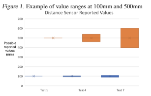
All distance sensors work by emitting rays and performing calculations based on them, therefore, we varied the number of rays, weights on the values returned by the rays and the arrangement of those rays.
- Tests conducted without noise - The following settings were used as default on webots - Pole Height - 2m, Up/Down wheel speed - 0.3 rad/s, Distance sensor thresholds of 1000mm.
The UV light was engaged by default.
- Friction Tests - All of the friction tests compared a surface type (for the pole) against rubber. The rubber we used for values provided was Rubber A 60, with the exception of test 7, for which we used ice-friction.
Success Criteria - We considered a pass to be successfully climbing and descending the pole 5 times.
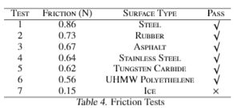
Tests 1-5 ultimately succeeded without any notable deviation from our expectations. Test 6 however, experienced a slight spin as it climbed, however, it was still possible for the entire climb/descent to be completed five times without seriously impacting the time taken. We tested some values between 0.56 and 0.15 and found as we decreased friction, the spin increased until PAUL couldn't climb the poll at all, as was the case in test 7. We are satisfied that PAUL will therefore be able to operate on handrails present within trains. There does exist some risk in the coefficient of friction being reduced because of the water introduced by passenger touching the pole if it is raining outside. Most handrails are made from steel or aluminium which have similar frictional properties to surface types we have tested, therefore, even if some reduction was experienced, it would be unlikely to impact the successful function of PAUL in any substantial way.
Main Areas of Improvement
The main issues we faced and the reasons why the hardware version of PAUL is not here today are as follows.
The wire arm we use to connect the consumer box to the pole climber puts too much pressure on one side of PAUL. This in turn leads to the UV casing being pulled against one side of the pole and PAUL is then unable to climb. We were unable to resolve this issue in time but if given the chance to do so in the future we would look to spread out the wire arm onto the three sides of the case so that equal pressure is applied to all sides.
Ideally, we would not have this wire arm at all and given more time we would look to make our Hardware version more like our Webots version.
We think our robot would work well with wireless charging which would remove the need for a large battery pack on the robot itself, we could place the charging pad for PAUL inside the consumer box which would keep it out of the way of passengers.
Another issue we repeatedly faced during testing is that the LEGO NXT motors we selected would stall on startup. Having individual motors stall at startup causes the robot to tilt to one side. This then causes the UV casing to be pulled against the pole and PAUL is then unable to climb. There are two possible solutions that we have seen to this issue: the first is to choose a new type of motor that is less prone to stalling and the second is to adjust the power on the other motors to compensate for the stalling motor.